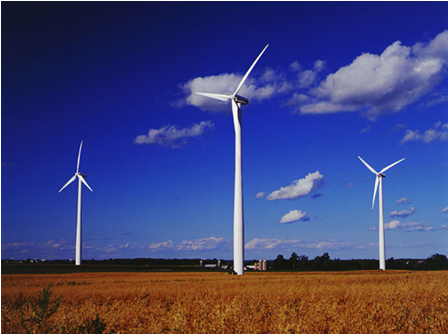

Wireless Sensor Network for Environmental and Energy ApplicationsGeorge French|Patrick Xie |
|
Home|
Sensors|
Wireless|
Hardware|
Central Hub
|
AimTo design and implement a fully functional autonomous wireless weather station for environmental and energy applications. Project OverviewAn array of sensors are set up to measure wind speed, relative humidity, rain fall and temperature. Measurements are first collected, processed and then transmitted via wireless modules to a central hub. The central hub processes the data and stores it in a database to be displayed graphically on a website. |